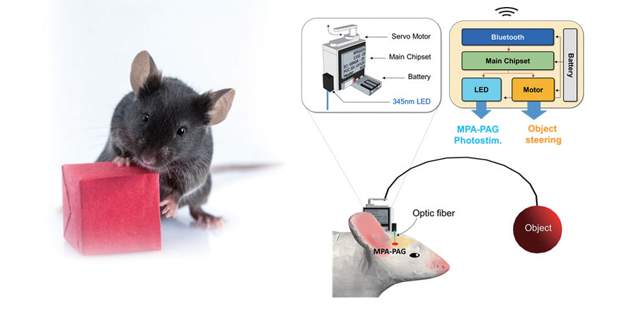

주제별 연구성과
주제별 연구성과
KAIST RESEARCH ACHIEVEMENTS
자원의 탐색 및 획득을 조절하는
신경회로 발견 및 조절
생명과학과 김대수
요약
유용한 목표를 획득하기 위해 노력하는 신경회로 발견 “김대수 교수 연구팀은 광유전학적(optogenetics)뇌 연구를 통해 물체에 대한‘소유’행동을 조절하는 핵심 신경회로(core-neural circuit)를 최초로 발견하였다. 본능 행동의 동기를 담당하는 시상하부 (hypothalamus) 중 빛으로 생쥐의 전시각중추 (medial preoptic area, MPA) 의 특정 회로를 자극했을 때 생존 가치에 개의치 않고 목표 물체를 ‘획득’ 및 ‘보유’하는 현상이 관찰되며, 공중에 떠 있는 물체와 같이 목표 물체를 직접 획득하기 어려운 환경 에서도 획득을 위해 노력하는 행동이 (목표 물체를 향한 도약) 관찰되었다. 본 연구에서는 첨단 연결체학 (connectomics)을 활용하여 소유관련 행동을 조절하는 신경회로의 세부지도를 완성하고 이 신경회로가 궁극적으로 먹이활동과 사냥행동 조절에 기여한다는 생태학적인 원리를 밝혔다. 또한 본 연구팀은 위 소유행동 신경 회로를 응용하여 동물의 행동을 조절할 수 있는 MIDAS (MPA-induced drive assisted steering) 기술을 개발하였다. 본 연구결과는 물건에 집착하는 수집증이나 쇼핑중독 등 뇌 질환을 치료할 수 있는 단서를 제공할 수 있고, 단순 행동조절에 더해 동물과 인간의 행동을 일으키는 동기 자체를 활용하는 기술개발에 도움을 줌으로써 신경경제학 및 국방, 재난구조 등에 기여할 수 있다.
연구배경
동물들의 먹이 활동을(foraging) 위한 호기심 표현 및 탐색, 획득 행동들은 궁극적으로 소유하고자하는 근본적 욕구와 연관이 있으나 정작 이해 대한 생물학적인 이해는 전무한 실정이다. 동물이 유용한 자원 혹은 먹이를 확보하려는 것은 생존을 위한 강력한 욕구이다. 따라서 뇌는 이러한 욕구를 바탕으로 유용한 목표를 탐색하고 획득하는 행동을 만들어 낸다. 그러나 현재까지 이러한 욕구를 만들어내는 신경회로 기전에 관해서 알려진 바 없었다. 물건 및 재화, 사회적 지위를 획득, 소유하려는 욕구는 인간행동의 생물학적 근간이 된다. 유년기에는 처음 보는 물건이나 장난감에 대한 소유 및 놀이행동이 나타나고 이는 성인이 되면서 점차 복잡한 형태의 전략으로 발달한다. 나아가 이러한 욕구는 한정된 재화를 소유하기 위해 사회적 경쟁을 유발하며 합리적인 경쟁을 위한 다양한 사회체제의 확립과 연관이 있다. 전시각 중추 (Medial preoptic area) 는 시상하부의 일부 구조체로 많은 종류의 서로 다른 신경들로 구성되어 있다.
선행 연구들은 이 신경들이 주로 사회적 대상에 대한 행동을 조절하는데 중요하다고 제안하였다. 그러나 전시각 중추가 목표 물체나 먹이감을 획득하는 비사회적 대상에 대한 행동 발현에 기여한다는 것은 알려진 바 없었다. 본 연구팀은, 사물을 탐색하고 획득하는 전시각중추의 기능을 연구하기 위하여 빛으로 신경을 자극 또는 억제할 수 있는 광유전학 (optogenetics) 기법을 활용하였다.생쥐의 뇌에서 CaMKII 유전자를 발현하는 전시각 중추신경을 빛으로 자극할 시, 생쥐가 물건에 집착하는 이상행동을 보인다. 이러한 물건에 대한 집착은 CaMKII 전시각중추 신경들이 수도관주의 회색질신경 PAG, Periaqueductal grey 으로 정보를 보내어 만들어진다는 것을 밝혔다. 이러한 MPA-PAG 신경회로를 억제하면 새로운 물건에 대한 호기심 및 욕심이 감소함을 밝혔다. 본 연구팀은 MPA-PAG 신경회로를 자극할 시, 눈앞의 목표를 획득하려는 성질을 활용하여 세계 최초로 포유류 행동조절에 성공하였다. MIDAS (MPA-induced drive assisted steering) 라고 명명된 이 기술을 통해 실험자가 원하는 장소로 생쥐가 장애물들을 스스로 극복하며 이동하도록 할 수 있었다. MPA-PAG 신경회로는 다양한 생물종에서 진화적으로 보존된 신경회로이기 때문에 다양한 동물의 행동조절에 활용될 수 있을 것으로 사료된다.
 그림 1. 자원탐색신경회로를 활용하여 동물의 행동을 조절하는 MIDAS 기술
기대효과
본 연구를 통해 동물이 먹이나 사물을 탐색하고 획득하는 뇌 기능에 대한 이해가 증진될 것으로 사료된다. MPA-PAG 신경회로를 다양한 동물에서 연구하면 어떻게 많은 동물들이 선택적으로 먹이사슬을 이루는 지에 대한 생태학적 원리를 규명하는데도 유용할 것이다.
본 연구에서 개발된 MIDAS 기술을 활용하면 다양한 동물의 행동을 조절할 수 있는 길이 열린다. 동물의 행동조절을 농업에 활용하여 고대 농업혁명의 시작이 되었듯이 MIDAS 기반의 자유로운 행동조절 방법은 현재 로보틱스의 한계를 극복 하는데 유용한 수단이 될 것이다.
MIDAS 동물은 스스로 먹이 활동을 하기에 로봇과 같이 에너지 공급 문제가 없으며, 스스로 장애물을 극복할 수 있으므로, 섬세한 조종이 필요없다. 네비게이션과 같이 경로만 선택해 주면 동물이 스스로 목표지점을 찾아가도록 설계할 수 있다. 본 연구의 ‘자원에 대한 소유행동 조절기전 발견’은 인간이 다양한 형태로 소유욕을 발전시켜 현대 사회 및 경제, 문화를 이루게 된 단서를 제공하게 될 것이다. 나아가, 소유행동 신경회로를 자극 또는 조절할 수 있는 기술로 발전될 가능성을 열어준다. 이는 4차 산업 혁명의 흐름에 따라 산업 및 경제 발전에 이바지할 수 있게 될 것이다.
연구성과
[논문] Sae-Geun Park, Yong-Cheol Jeong, Dae-Gun Kim, Min-Hyung Lee,Anna Shin, Geunhong Park, Jia Ryoo, Jiso Hong, Seohui Bae, Cheol-Hu Kim, Phill-Seung Lee and Daesoo Kim (2018) Medial preoptic circuit induces hunting-like actions to non-social objects and prey, Nature Neuroscience.
[특허] Park, S and Kim, D et al., PCT/KR2017/001470, Method for controlling behavior of animals using object seeking behavior Park, S and Kim, D et al., KR10/2016/0016473, An animal whose behavior can be regulated by light and use thereof
[언론 보도] Highlighted in INSCPOPIX news (must-read neural circuit papers in Jan, 2018), USA